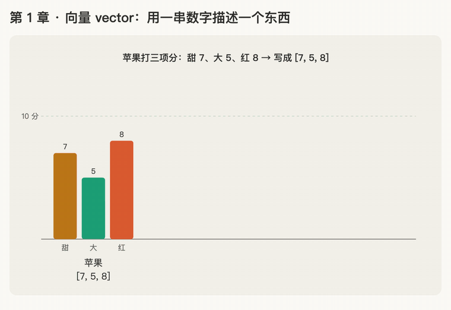
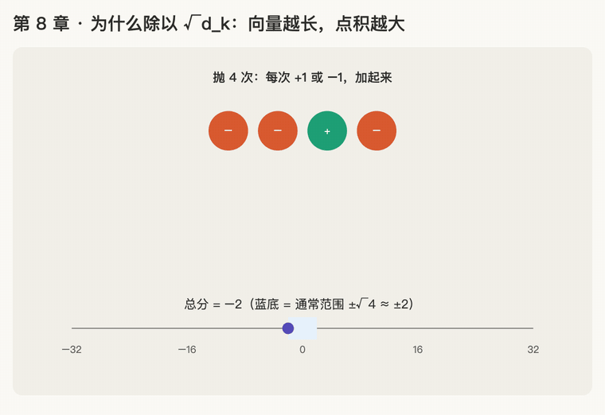
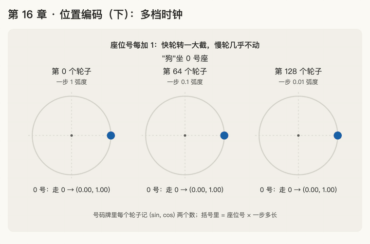
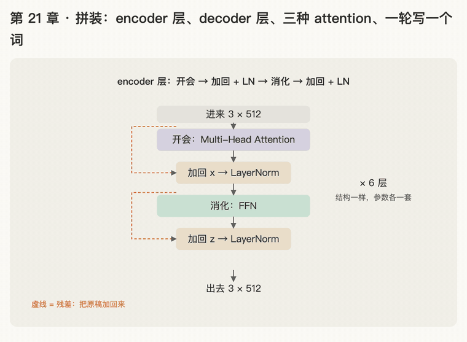

从零读懂 Transformer
从向量、点积讲起，一步步走到论文《Attention Is All You Need》第 3 节的完整 Transformer。共 24 章，每章配一个动画。
每章的结构：本章回答的问题 → 讲解（白话类比 → 公式 → 例子）→ 练习与作答记录 → 口诀 → 复习卡片 → 延伸阅读。
怎么看
- 讲义：每章正文里嵌着 GIF 动画，打开就能播放。
- 可交互动画：章节标题下的"打开本章可交互动画"，或点下面的卡片进入讲义后再打开。按钮：▶ 播放自动演示，→ 单步自己控制节奏，↺ 从头开始；有滑块的可以拖动参数。
- 复习卡片：先看问题自己答，再点开折叠的答案核对。
全部章节

第 1 章向量 vector 第 2 章点积 dot product
第 2 章点积 dot product 第 3 章softmax（上）：把分数变成比例
第 3 章softmax（上）：把分数变成比例 第 4 章按比例取信息：加权平均
第 4 章按比例取信息：加权平均 第 5 章次方与 e
第 5 章次方与 e 第 6 章softmax（下）：为什么要先套 e^x
第 6 章softmax（下）：为什么要先套 e^x 第 7 章softmax 饱和
第 7 章softmax 饱和
第 8 章为什么除以 √d_k 第 9 章Q、K、V 分别是什么
第 9 章Q、K、V 分别是什么 第 11 章大写的 Q、K、V：一次算出所有分数
第 11 章大写的 Q、K、V：一次算出所有分数 第 13 章多头注意力 multi-head attention
第 13 章多头注意力 multi-head attention 第 14 章位置编码 positional encoding
第 14 章位置编码 positional encoding 第 15 章sin 和 cos：圆上转圈
第 15 章sin 和 cos：圆上转圈
第 16 章位置编码（下）：多档时钟 第 17 章因果 mask：不许偷看后面的词
第 17 章因果 mask：不许偷看后面的词 第 18 章残差连接：输出 = 输入 + 子层(输入)
第 18 章残差连接：输出 = 输入 + 子层(输入) 第 19 章LayerNorm：把每个词的数字调到统一范围
第 19 章LayerNorm：把每个词的数字调到统一范围 第 20 章前馈网络 FFN：每个词回到自己座位上消化
第 20 章前馈网络 FFN：每个词回到自己座位上消化
第 21 章拼装：一个 Transformer 层；encoder / decoder 全图；三种 attention 第 22 章输入 embedding 与输出 softmax：词怎么变成向量，向量怎么变回词
第 22 章输入 embedding 与输出 softmax：词怎么变成向量，向量怎么变回词 第 23 章复杂度：为什么 attention 是 n²，长文本为什么难
第 23 章复杂度：为什么 attention 是 n²，长文本为什么难 第 24 章收尾：数参数、warmup 学习率、对照原文通读 §3
第 24 章收尾：数参数、warmup 学习率、对照原文通读 §3